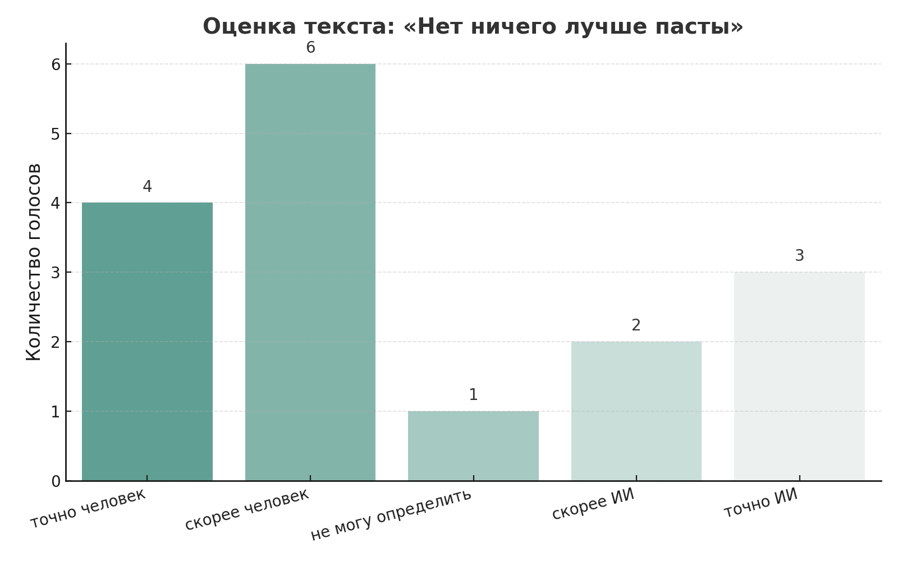
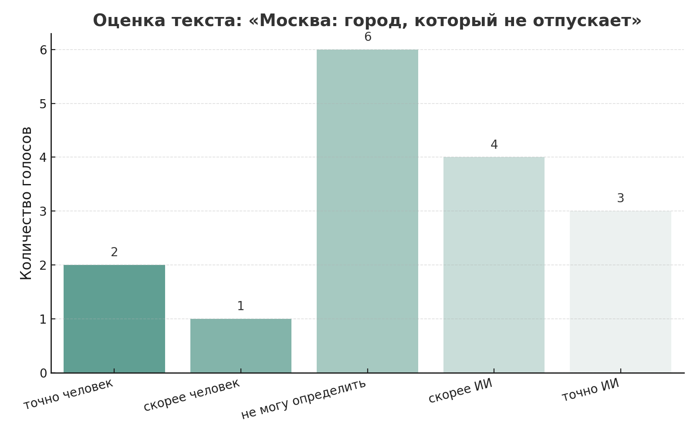

Симфония Вкуса: Ода Крылышкам KFC
Я порицаю диеты и ограничения... Крылышки KFC в кисло-сладком соусе – это не просто еда, это гастрономическое приключение...
Гистограмма: как голосовали участники
Реальное соотношение ИИ / человечности в тексте:

Паста – это холст, на котором можно нарисовать любой кулинарный шедевр... Поэтому, я с уверенностью заявляю, что паста это очень круто!

Кофе
Кофе – напиток, без которого многие не представляют свое утро... Пусть его аромат еще долго наполняет наши жизни энергией.
Соотношение ИИ / человечности в тексте:
Москва: город, который не отпускает
Москва – это не просто город, это особое чувство... В Москве всегда чувствуешь себя в центре событий.

Соотношение ИИ / человечности в тексте:
Мухомор: загадки и опасности грибного мира
Мухомор — это не просто гриб, а символ двойственности природы... Красота может сочетаться с опасностью.
Соотношение ИИ / человечности в тексте:
Проблема XXI века: искусственный интеллект
Вопрос который меня волнует: ИИ для человечества — это хорошо или плохо? Я считаю, что его нужно урегулировать в образовании...
Соотношение ИИ / человечности в тексте: